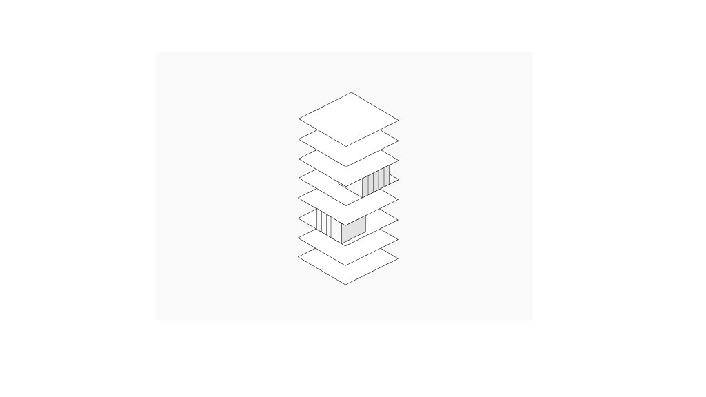
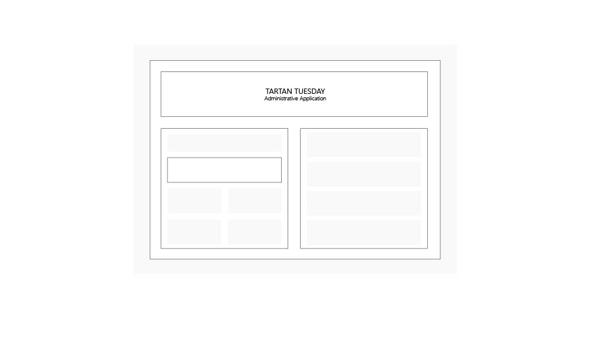
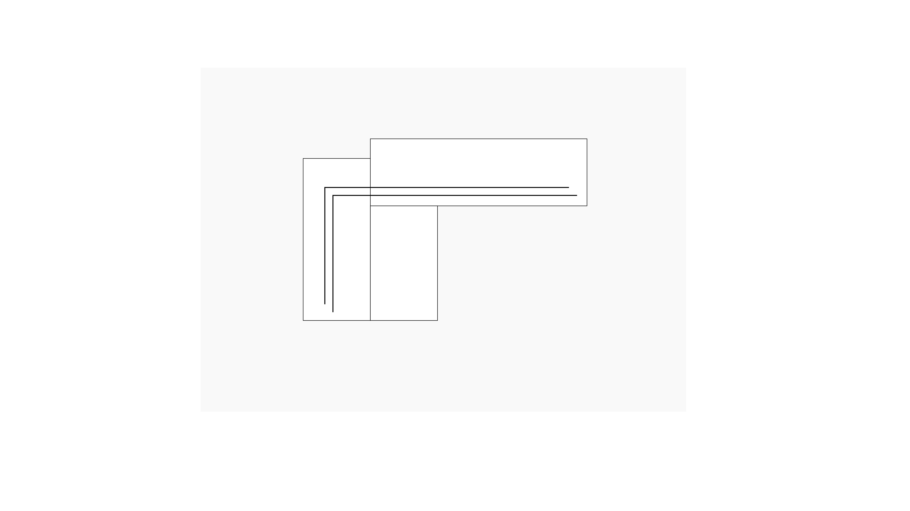
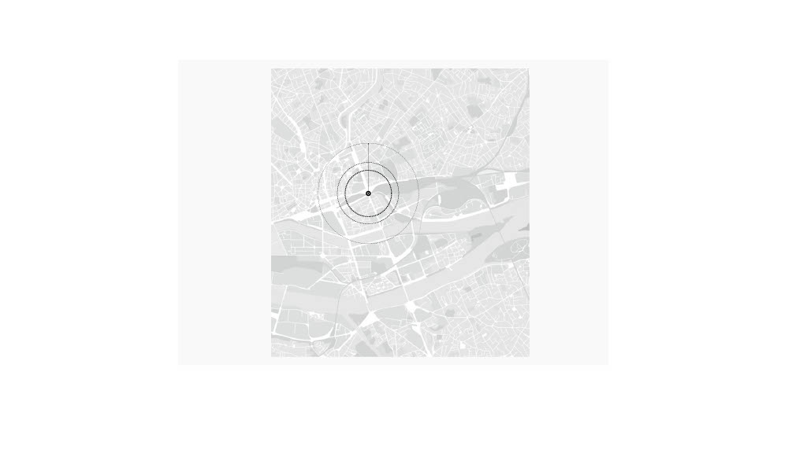
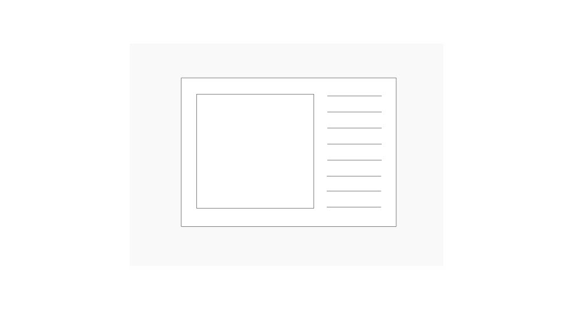
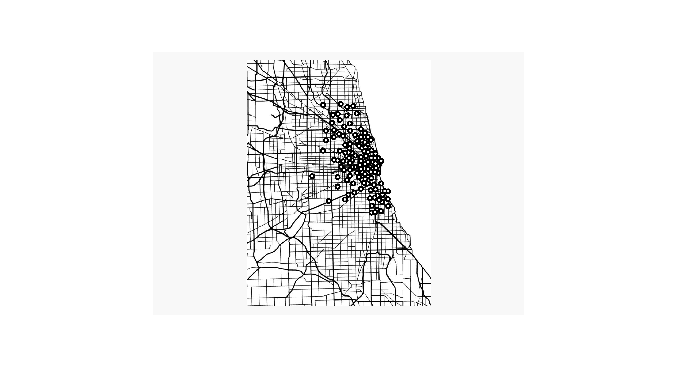
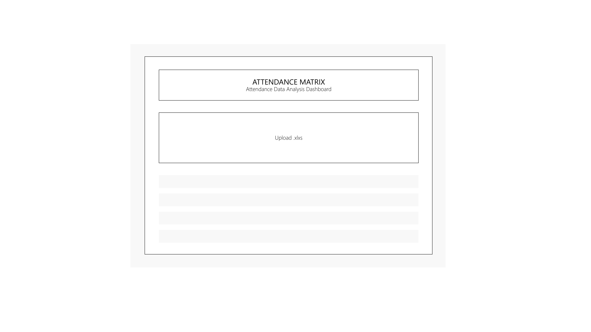
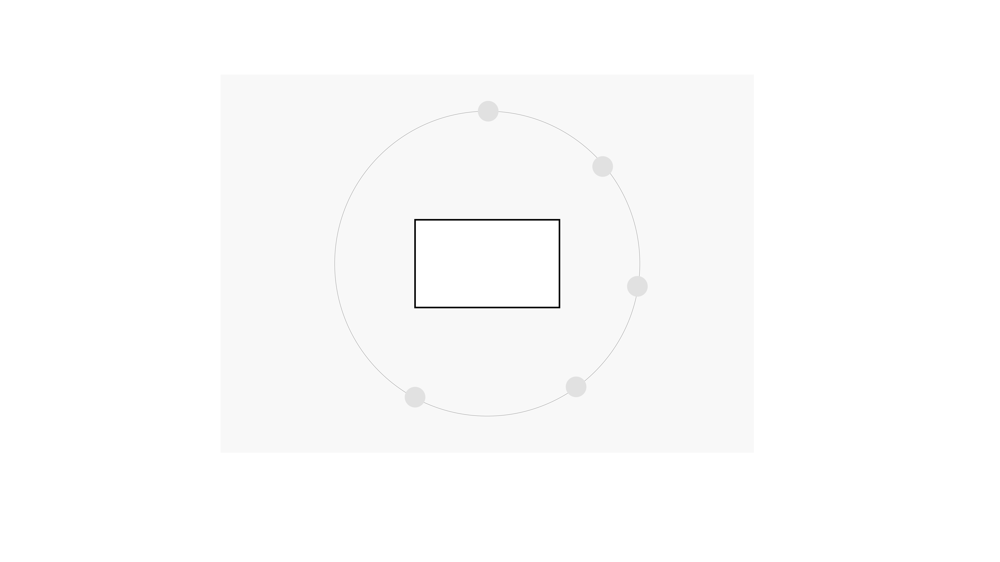
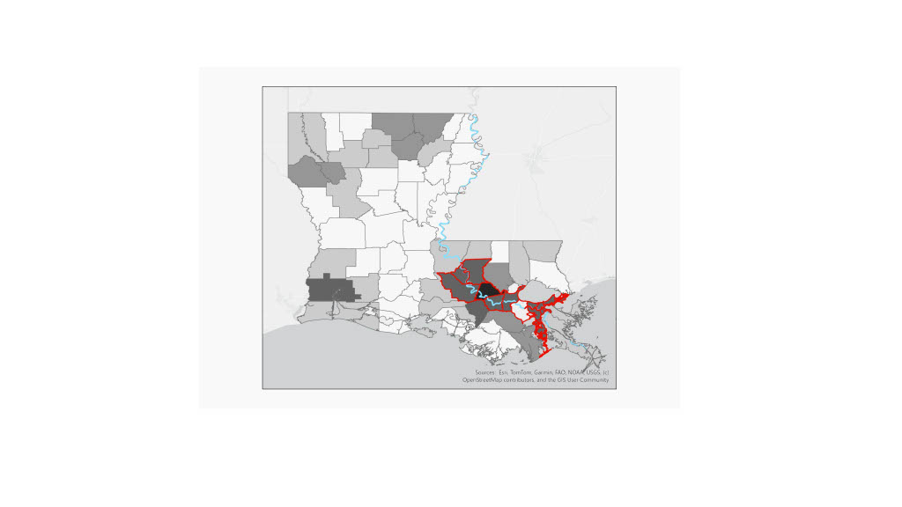

All Work

Adaptive Reuse Thesis
Parametric analysis using RhinoPython + Grasshopper + ML for daylighting optimization of 1965-1985 office buildings. Automated workflow evaluating spatial daylight autonomy across 100+ building configurations.

Tartan Tuesday Management System
Built React + Google Apps Script web application for student engagement program serving 200+ weekly participants. Real-time cloud sync, duplicate detection, point tracking, and Excel import/export functionality.

ASHRAE Library Design
Comprehensive HVAC system design integrating VRF-DOAS with renewable energy, achieving 45% energy reduction through facade optimization and smart zoning strategies.

Urban Fire Risk Prediction
Developed ML model for fire-spread prediction in urban districts using geospatial data. Created interactive visualization dashboard integrating simulation with predictive algorithms.

Small Office HVAC Analysis
Comparative HVAC system analysis with detailed load calculations and ERV sizing. Evaluated four system types, recommending mini-split VRF for 33% energy savings.

Chicago Drug Data Dashboard
Built full-featured Python dashboard using Pandas, NumPy, Altair, Pydeck, and Streamlit. Interactive geospatial visualizations and time-series analysis of 100,000+ data points.

Attendance Matrix Tool
Built web-based tool to automate attendance tracking for 66-student class across 21 sessions. Processes Excel files, calculates percentages, and generates formatted reports.

Shaping Daylight Workshop
Intensive daylighting workshop exploring spatial quality through annual metrics, glare analysis, and view studies. Parametric iteration of shading strategies.

Environmental Justice Analysis
Spatial analysis examining relationships between industrial facilities and demographics using kernel density analysis, buffer zones, and demographic correlations.

Crossy Road
Isometric arcade game clone with procedural terrain generation, object-oriented design, and dynamic difficulty scaling.
Computational Design
Adaptive Reuse Thesis
Parametric analysis using RhinoPython + Grasshopper + ML for daylighting optimization of 1965-1985 office buildings.
Tartan Tuesday Management System
React + Google Apps Script web application for 200+ weekly participants with real-time cloud sync.
Urban Fire Risk Prediction
ML model for fire-spread prediction using geospatial data.
Chicago Drug Data Dashboard
Python dashboard with interactive geospatial visualizations (100K+ data points).
Attendance Matrix Tool
Automated attendance tracking for 66 students across 21 sessions.
Environmental Justice Analysis
GIS spatial analysis with kernel density and demographic correlations.
Web Development
Tartan Tuesday Management System
React frontend with Google Apps Script backend serving 200+ weekly participants.
Attendance Matrix Tool
Client-side Excel processing tool with dynamic report generation.
Chicago Drug Data Dashboard
Streamlit-based dashboard with geospatial visualizations and real-time filtering.
Building Performance
ASHRAE Library Design
VRF-DOAS system design achieving 45% energy reduction.
Small Office HVAC Analysis
System comparison achieving 33% energy savings.
Adaptive Reuse Thesis
Performance analysis of office-to-residential conversions.
Shaping Daylight Workshop
Annual daylight metrics and parametric shading optimization.
Game Development

Crossy Road
Isometric arcade game clone features procedural terrain generation, object-oriented design, and dynamic difficulty scaling. View Game Code →